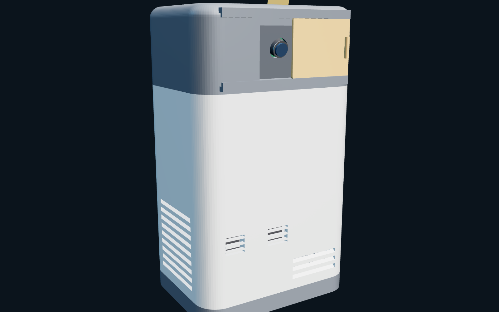
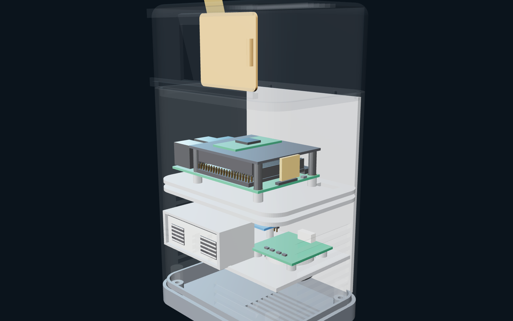
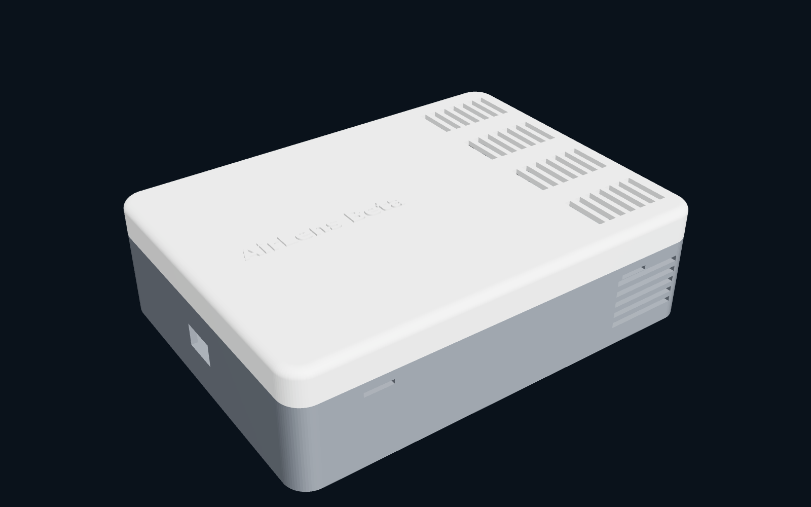
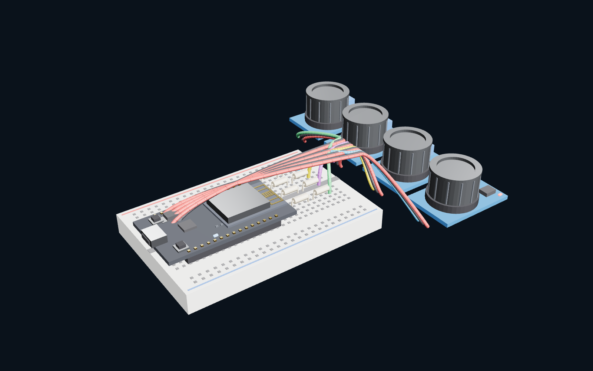

Full version · concept design
AirLens Node
Hyperlocal air, explained.
Two senses that can each raise an alert: a live camera that recognises smoke, and gas sensors that catch what a camera can't see.

The full version is a concept design and isn't built for the exhibition. AirLens Beta runs at this booth.
An indoor tower that keeps its eyes covered
A rounded square tower printed in PETG. Louvres are angled at 35° so it prints without much support, and the camera head looks 15° down into the room. A sliding cover closes the lens for privacy. There is no status LED: alerts go to the website.
- Size
- 120 × 90 × 205 mm
- Material
- PETG, 2.5 mm walls, rounded corners
- Camera head
- Pocket tilted 15° down
- Privacy
- Physical sliding lens cover, no LED
Two senses, either can raise the alarm
- Eyes
- A live camera that recognises smoke. Grad-CAM++ shows which part of the image made the model sure.
- Nose
- Gas sensors that feel invisible gas, such as CO.
Each sense works on its own, and together they decide how urgent an alert is. This replaces the old design, where a gas sensor woke the camera to take a single photo.
One spine holds every module
The sleeve lifts off after removing four M3 screws from below, which go into heat-set inserts. Underneath, the spine carries the sensors, a double divider, and the Raspberry Pi above it.
Six printed parts: base, spine, sleeve, cap, lens shutter and a wall bracket.

Module 1 of 4
Raspberry Pi 5 + AI HAT+
Brain and on-device AI
The Raspberry Pi 5 (8 GB) with Active Cooler runs the live camera, the smoke model and the data uplink at once. The AI HAT+ (Hailo, 26 TOPS) runs the smoke model on the camera video without loading the processor.
Powered by the official 27 W USB-C adapter (5 V 5 A)
Labelled in the 3D view: Active Cooler, GPIO header, PCIe to AI HAT+.
Module 2 of 4
Camera Module 3 Wide
Live camera
IMX708, 12 MP, HDR and autofocus, with a 120° diagonal view (102° × 67°). One viewpoint covers a room and stays clear in difficult light.
Frames aren't sent out continuously: the node only sends the smoke probability, and the sliding cover shuts the lens.
25 × 24 × 12.4 mm
Labelled in the 3D view: 120° wide lens, 22-pin camera cable.
Module 3 of 4
Sensirion SEN66
One sensor, many readings
PM1, PM2.5, PM4 and PM10, CO₂ (NDIR), VOC index, NOx index, temperature and humidity, each as its own output rather than one mixed number like an MQ sensor.
It presses into a gasketed funnel in the front wall. Inlet and outlet are separated so air doesn't recirculate.
55 × 26 × 21 mm, 3.3 V, I²C 0x6B. VOC and NOx are indices, not ppm of a specific gas.
Labelled in the 3D view: air inlet, air outlet, gasketed funnel.
Module 4 of 4
Alphasense CO-B4 + ISB + ADS1115
The invisible gas that kills
A four-electrode electrochemical CO cell, 0–1000 ppm, T90 under 30 s, far more selective and stable than an MQ-7. It faces down, so dust and splashes don't settle on its filter.
The Raspberry Pi has no analogue pins, so a 16-bit ADS1115 sits right next to the ISB board and the analogue wires stay under 10 cm.
CO in ppm after calibration. AirLens is not a certified CO alarm.
Labelled in the 3D view: electrochemical cell, ISB amplifier, ADS1115 ADC.
Cool below, warm above
Sensors sit in the cool zone at the bottom. The Pi 5 and AI HAT+ sit above a double divider: two plates with a 3 mm gap filled with EPDM foam. Heat from the Pi never passes the sensors.
Two air paths that never mix
- Room air enters through louvres at the bottom and sides and reaches the sensors
- Pi cooling air enters at the back-middle and leaves at the top-back, so its heat neither passes the sensors nor blows toward people
Two triggers, three alerts
The node only sends raw numbers. The server decides, with one rule set for the full node, the node simulator and the live camera.
Camera: median smoke probability ≥ 0.70 on at least 3 of the last 5 checks. CO: ≥ 30 ppm twice in a row, about the WHO guideline for one hour of exposure. VOC and NOx indices have their own thresholds.
It shows what it saw
On the Live camera page, Grad-CAM++ paints a heatmap over the video showing which part of the image made the smoke model sure. Frames are analysed in memory and discarded.
SHAP explains the decision across the sensors, the camera and the city baseline. Main factors, largest first:
- CO-B4 sensor
- Camera
- VOC index
- PM2.5
- City baseline
The smoke model is trained mostly on outdoor scenes, so indoor accuracy still needs testing and will be reported as it is.
Running at this booth
AirLens Beta
ESP32 + 4 MQ gas sensors → AI model, explained with SHAP
An ESP32 DevKit V1 reads four MQ gas sensors (MQ-2, MQ-3, MQ-7, MQ-135), each through a 10 kΩ / 20 kΩ voltage divider, and sends readings over HTTPS. A small AI model tells clean air, smoke and alcohol apart, and SHAP shows which sensor pushed each decision. It lives in a printed box, 150 × 112 × 42 mm: a tray and a clip-on lid, with the four sensors in a row behind a heat divider because their heaters run warm.


Explained with SHAP. MQ sensors are not selective and the model was trained on another team's sensors, so treat its answer as a hint, not a measurement.
Labelled in the unwrapped 3D view: ESP32 DevKit V1, 4 MQ gas sensors, 4 × 10 kΩ / 20 kΩ dividers.
Try it here
The camera demo and the Beta sensor run live at this booth.